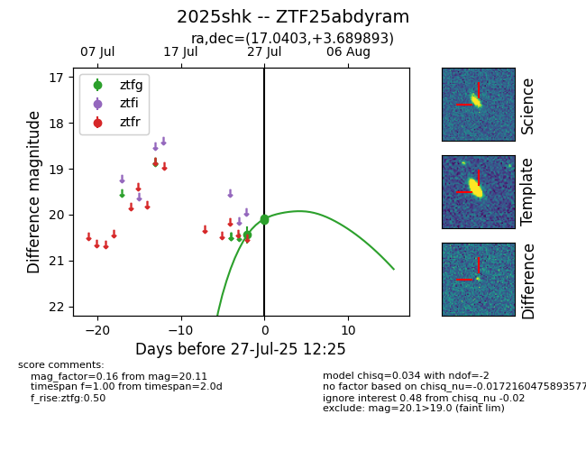

Target 2025shk at 2025-07-27 12:25, see:
FINK: fink-portal.org/2025shk
Lasair: lasair-ztf.lsst.ac.uk/objects/2025shk
ALeRCE: alerce.online/object/2025shk
TNS: wis-tns.org/object/2025shk
YSE: ziggy.ucolick.org/yse/transient_detail/2025shk
alt names
ZTF25abdyram (ztf,fink)
2025shk (tns,yse)
coordinates:
equatorial (ra, dec) = (17.0403,+3.68989)
galactic (l, b) = (131.0333,-58.91855)
photometry
last ztfg=20.11
3 ztfg detections
